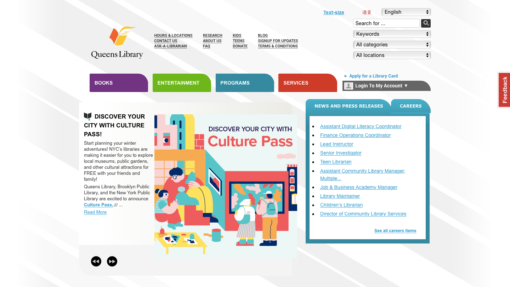
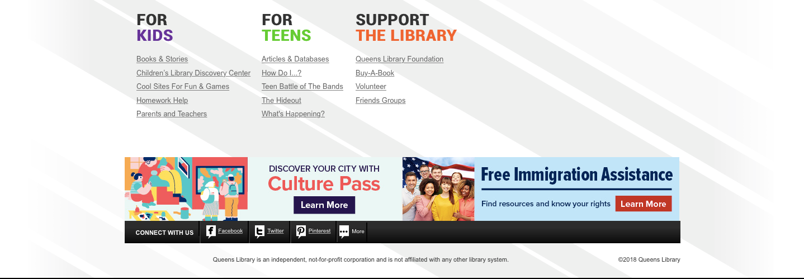
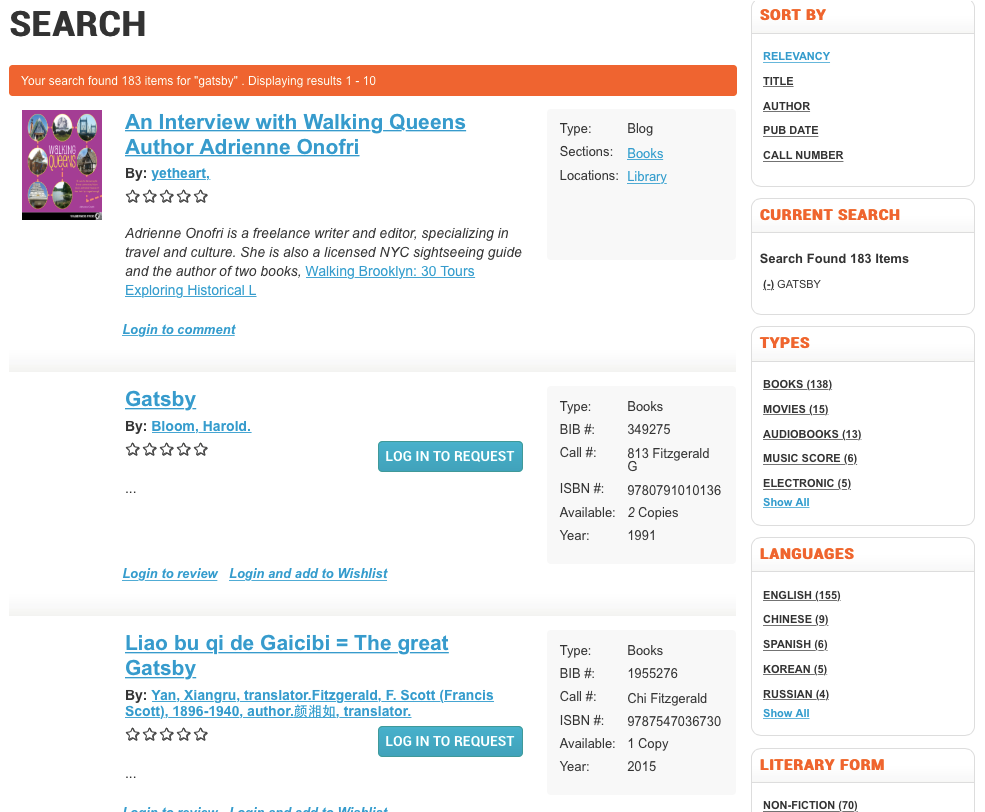
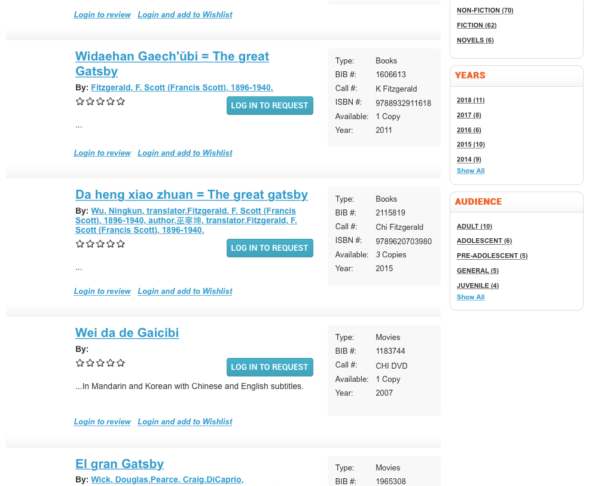
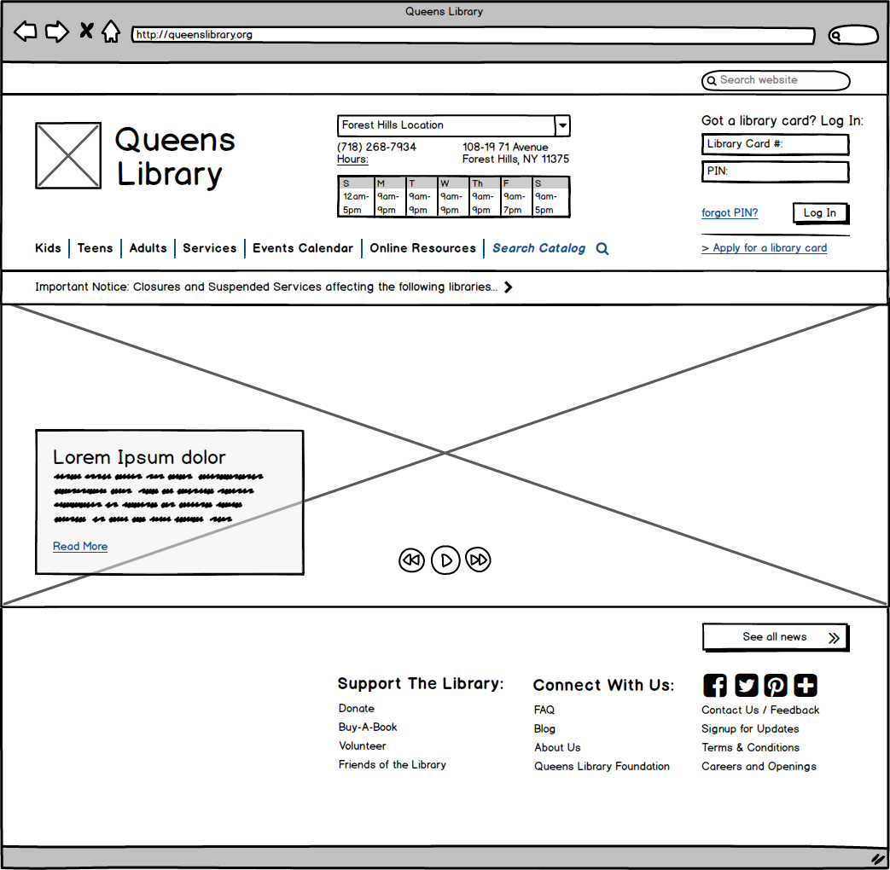
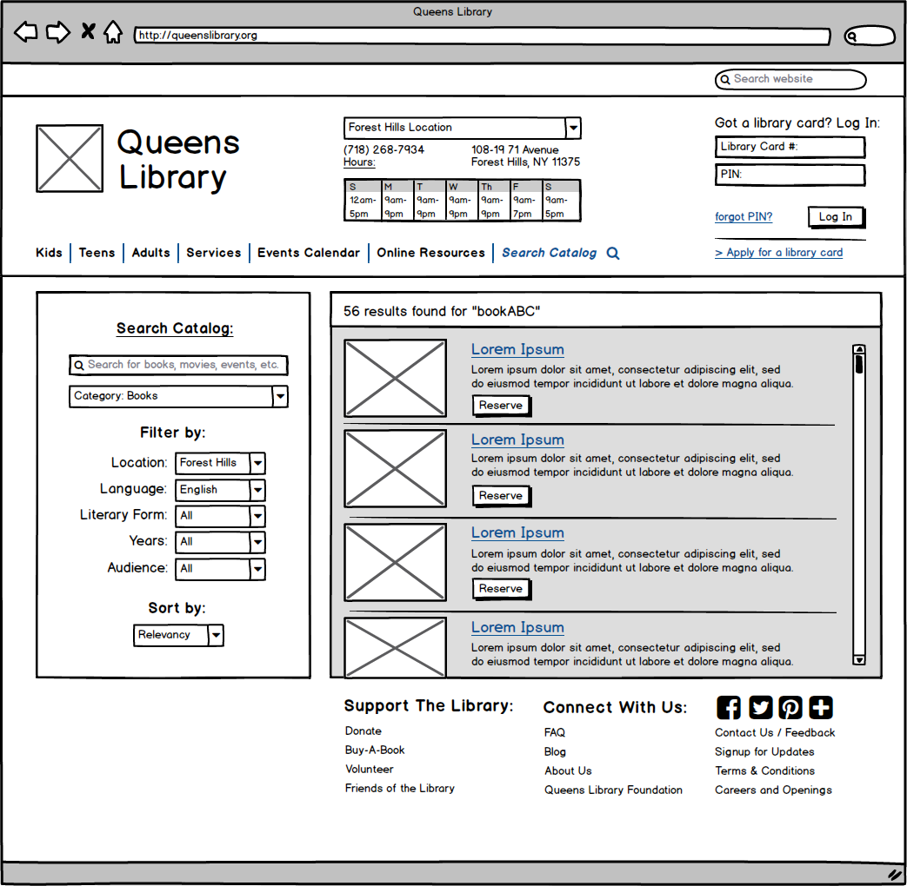
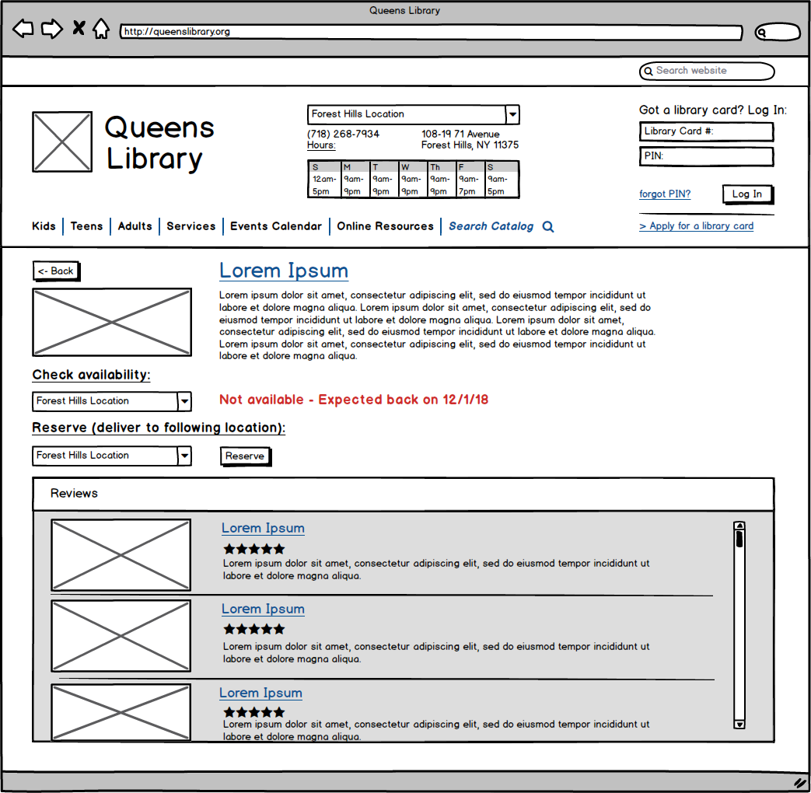
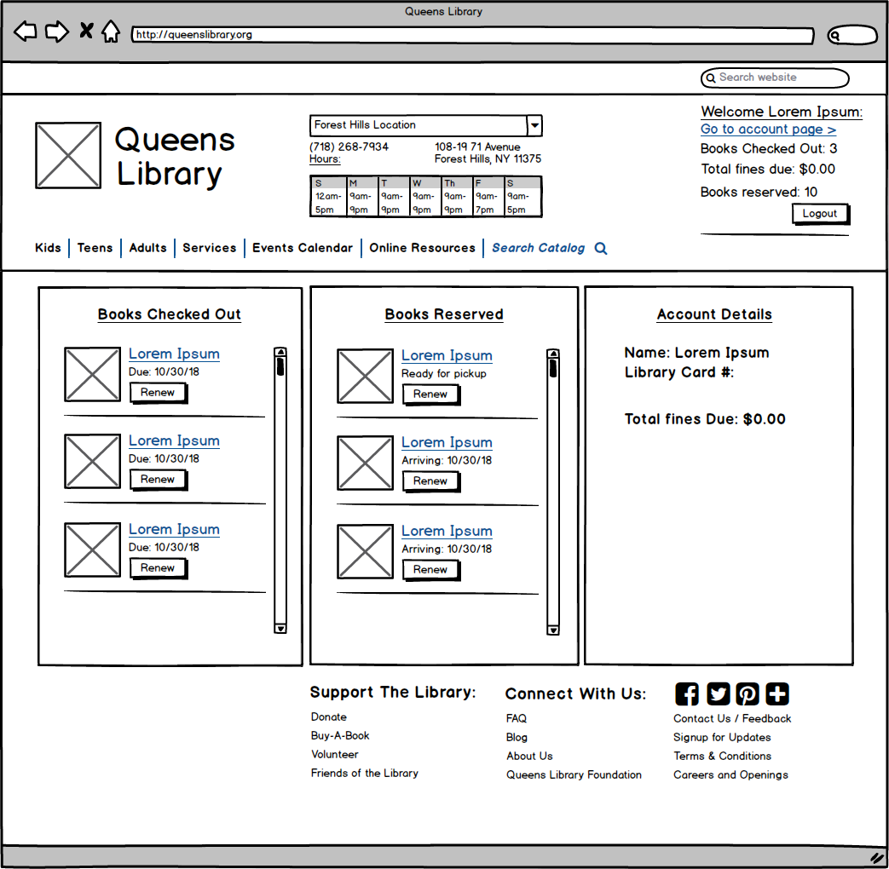
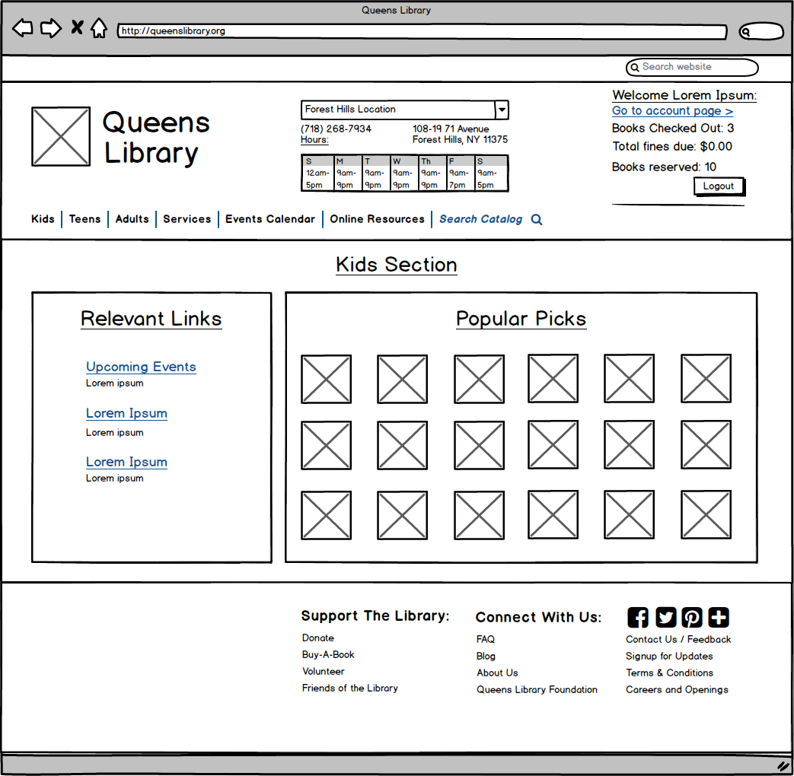

QueensLibrary Redesign
This project is a redesign of the QueensLibrary website focused on improving usability and visual appearance. It was created as part of a UI/UX class project.
Context
With over 900,000 active borrowers, the QueensLibrary has made a place for itself in the communities that it serves - offering numerous community and arts events, career training, and translation services alongside its more traditional services of lending books and facilitating research. QueensLibrary's current website, however, makes learning about these events and services rather difficult and could be much improved in terms of user experience. Since the website plays a vital role in promoting QueensLibrary and its services, I decided to do a redesign of the website with a focus on improving usability and visual appearance.
Research
Before starting on my redesign, I took a more in-depth look at the QueensLibrary website. The homepage for the current website looks like this:


In doing so, I identified specific areas for potential improvement.
Intuitive Design:
- Currently, navigation for this website is not very intuitive, as it is very spread out. For example, the homepage alone has three different sections for navigation – one at the top by the logo, one in the middle with brightly colored drop-down menus, and one at the bottom. As can be seen from the links / header examples above, the sections overlap in terms of topic (such as kids programs), so deciding which area to use for navigation and where you are most likely to find what you need isn’t very intuitive.


Ease of Learning:
- One potential difficulty for a new user lies in the search functionality, since to figure out if a library has a certain book, a new user has to perform a search using the search bar on the upper right hand corner. On many websites, however, a search bar in that location performs a search over all of the pages on the site, so a new users looking to search over only the library’s catalog may overlook this feature.
Efficiency: (especially for these common uses)
- Searching: Filtering after performing a search currently requires clicking on links consecutively to narrow down one feature (languages, years, types, etc.) at a time. For example, filtering by language and type would require two page reloads. In addition, the filter options are all listed on a right sidebar, so a user would have to scroll down a lot to get to what they want to filter by.
- Finding hours and locations: Currently, the user has to first find the link to the hours and locations page on one of the navigation areas, and then has to scroll through a long list of all potential hours to find the library that they are looking for.
Design
Lo-fi wireframes (Usability Redesign):





Hi-fi mockup (Visual Redesign):

For my visual redesign, I made several changes. I first used a 6 column vertical grid to improve alignment. I chose 6 columns, since it was small enough to provide structure while still large enough to accommodate my sections / groupings.
I then changed the color palette to orange and blue. I chose orange as the main color to match the library’s logo, and blue as the accent color since it is complementary to orange. To improve navigation and to help a user find what they need more quickly, I used blue to draw attention to important areas like closure notices, the search catalog link, and headings.
Conclusion